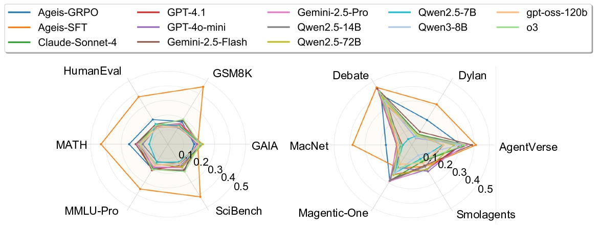

Abstract
As Multi-Agent Systems (MAS) become increasingly autonomous and complex, understanding their error modes is critical for ensuring their reliability and safety. However, research in this area has been severely hampered by the lack of large-scale, diverse datasets with precise, ground-truth error labels. To address this bottleneck, we introduce AEGIS, a novel framework for Automated Error Generation and Identification for Multi-Agent Systems.
By systematically injecting controllable and traceable errors into initially successful trajectories, we create a rich dataset of realistic failures. This is achieved using a context-aware, LLM-based adaptive manipulator that performs sophisticated attacks like prompt injection and response corruption to induce specific, predefined error modes. We demonstrate the value of our dataset by exploring three distinct learning paradigms for the error identification task: Supervised Fine-Tuning, Reinforcement Learning, and Contrastive Learning.
Method Overview
AEGIS follows a principled three-stage pipeline to generate high-quality error data and supports multiple learning paradigms for robust error identification.
The AEGIS framework automatically generates labeled failures by taking successful multi-agent trajectories and applying controlled, context-aware error injections, enabling three distinct learning methods for error identification.
Results
Performance Highlights
- Aegis-SFT achieves 26.51 average score
- 2× improvement over base models
- 9,533 trajectories with 24,843 error instances
- 6 MAS frameworks × 6 task domains
Performance by Domain
Aegis-SFT (orange) consistently outperforms all baseline models across different task domains and MAS frameworks.
Complete Results on AEGIS-Bench
| Model | Pair | Agent | Error | Avg. | |||
|---|---|---|---|---|---|---|---|
| μF1 | MF1 | μF1 | MF1 | μF1 | MF1 | ||
| Random Baseline | 0.33 | 0.21 | 4.54 | 3.56 | 11.23 | 11.15 | 4.08 |
| Small-Scale Models | |||||||
| DCL (Ours) | 8.33 | 5.30 | 22.93 | 20.23 | 24.73 | 27.70 | 12.61 |
| Medium-Scale Models | |||||||
| Qwen2.5-7B-Instruct | 5.02 | 2.52 | 27.55 | 14.49 | 14.96 | 11.36 | 12.43 |
| + SFT | 5.05 | 2.80 | 60.03 | 22.70 | 19.61 | 16.90 | 17.99 |
| + GRPO | 7.11 | 2.77 | 35.43 | 14.86 | 17.21 | 10.54 | 14.87 |
| Qwen2.5-14B-Instruct | 5.47 | 2.20 | 35.78 | 12.71 | 20.24 | 5.91 | 13.99 |
| + SFT (Aegis-SFT) | 16.62 | 9.99 | 76.53 | 47.97 | 27.53 | 27.66 | 26.51 |
| + GRPO (Aegis-GRPO) | 6.84 | 2.55 | 49.74 | 18.38 | 21.19 | 16.10 | 18.41 |
| Qwen3-8B-Non-Thinking | 3.96 | 1.40 | 21.34 | 8.16 | 15.81 | 13.89 | 10.12 |
| + SFT | 9.68 | 5.73 | 64.79 | 38.96 | 20.37 | 20.36 | 21.41 |
| + GRPO | 6.94 | 2.82 | 45.91 | 17.39 | 20.89 | 15.15 | 17.15 |
| Qwen3-8B-Thinking | 4.42 | 1.52 | 34.63 | 9.01 | 17.48 | 14.31 | 13.06 |
| + GRPO | 4.41 | 1.66 | 36.11 | 15.73 | 17.94 | 12.03 | 17.58 |
| Large-Scale Models | |||||||
| Qwen2.5-72B-Instruct | 5.60 | 2.20 | 37.46 | 14.51 | 17.72 | 16.58 | 15.01 |
| gpt-oss-120b | 6.53 | 1.71 | 38.58 | 5.53 | 20.38 | 12.05 | 17.07 |
| GPT-4.1 | 7.44 | 2.27 | 37.48 | 11.12 | 20.65 | 15.75 | 15.27 |
| GPT-4o-mini | 5.76 | 1.63 | 38.54 | 14.72 | 19.95 | 16.02 | 15.83 |
| o3 | 7.86 | 2.27 | 40.31 | 23.27 | 22.37 | 16.76 | 20.24 |
| Gemini-2.5-Flash | 6.99 | 2.76 | 42.02 | 16.45 | 23.47 | 19.85 | 19.55 |
| Gemini-2.5-Pro | 6.96 | 2.88 | 41.32 | 16.15 | 19.93 | 16.29 | 18.35 |
| Claude-Sonnet-4 | 7.68 | 2.34 | 40.73 | 15.51 | 21.21 | 16.55 | 18.16 |
Resources
Paper
Read the full paper on arXiv with detailed methodology and comprehensive experiments
Code
Access the complete codebase, including data generation pipeline and training scripts
Dataset
Download the AEGIS dataset with 9,533 annotated error trajectories
Models
Pre-trained models on Hugging Face for error identification in multi-agent systems
Benchmark
AEGIS-Bench evaluation suite for systematic MAS error identification
Documentation
Comprehensive guide for using AEGIS in your own multi-agent systems
Citation
If you find AEGIS useful for your research, please cite our paper:
Click here to copy citation to clipboard